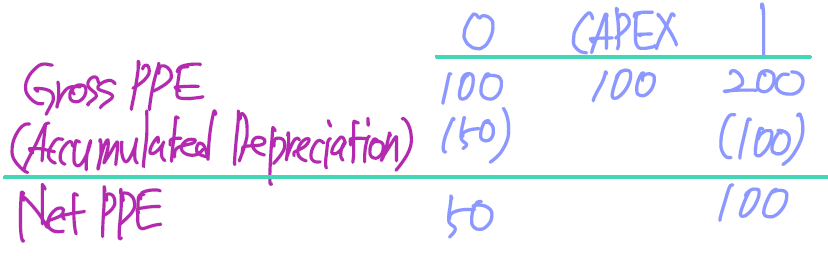

CFA Level 2 Equity
LOS 24.a: Define valuation and intrinsic value and explain sources of perceived mispricing.
Intrinsic Value (IV)
the valuation of an asset or security by someone who has complete understanding of the characteristics of the asset or issuing firm.
Asset Mispricing
Efficient market theory: Intrinsic value = Market value

LOS 24.b: Explain the going concern assumption and contrast a going concern value to a liquidation value.
The going concern assumption is simply the assumption that a company will continue to operate as a business.
The liquidation value is the estimate of what the assets of the firm would bring if sold separately, net of the company’s liabilities.
going concern value > liquidation value: value added from asset synergy
LOS 24.c: Describe definitions of value and justify which definition of value is most relevant to public company valuation.
Fair market value
Fair market value is the price at which a hypothetical willing, informed, and able seller would trade an asset to a willing, informed, and able buyer.
well-informed, willing buyer and seller
팔거나 살 수 있는 willingness가 중요, ability도 있어야 함
fair value
fair value != fair market value, but 같을 수 있음
value for financial reporting
investment value
Investment value is the value of a stock to a particular buyer. Investment value may depend on the buyer’s specific needs and expectations, as well as perceived synergies with existing buyer assets.
value to specific buyer: synergy 고려
LOS 24.d: Describe applications of equity valuation.
- stock selection - is the stock under- or overvalued?
- inferring market expectations - what does the security price say about expectations?
- Evaluating corporate events - what is the effect on firm value from a merger?
- fairness opinions - is the value paid for the firm fair?
- evaluating business strategies - what is the effect on firm value of a new strategy?
- communicating with analysis and shareholders - how is firm value being affected?
- appraising private businesses - what is the value of a private firm?
- compensation - what is the value of equity compensation?
LOS 24.e: Describe questions that should be addressed in conducting an industry and competitive analysis.
the valuation process
- understanding the business
- forecasting company performance
- selecting the appropriate valuation model - absolute or relative
- using forecasts in a valuation
- applying the valuation conclusions - over or under valued?
five elements of industry structure
- threat of new entrants in the industry
- threat of substitutes
- bargaining power of buyers
- bargaining power of supplier
- rivalry among existing competitors
three generic strategies
- cost leadership
- product differentiation
- focus - employing one of the previous strategies within a particular segment of the industry in order to gain a competitive advantage.
Quality of earnings examples
- accelerating or premature recognition of income
- recognizes revenue early using bill-and-hold sales.
- reclassifying gains and nonoperating income
- capitalizes product development expenses
- expense recognition and losses
- revenue: non-operating -> operating
- expense: operating -> non-operating
- amortization, depreciation, and discount rates
- liabilities are understated
- off-balance-sheet issues
- increases loan-loss reserves
LOS 24.f: Contrast absolute and relative valuation models and describe examples of each type of model.
Absolute valuation
One absolute valuation approach is to determine the value of a firm today as the discounted or present value of all the cash flows expected in the future.
Another absolute approach to valuation is represented by asset-based models. This approach estimates a firm’s value as the sum of the market value of the assets it owns or controls. This approach is commonly used to value firms that own or control natural resources, such as oil fields, coal deposits, and other mineral claims.
Relative valuation
Another very common approach to valuation is to determine the value of an asset in relation to the values of other assets.
LOS 24.g: Describe sum-of-the-parts valuation and conglomerate discounts.
Rather than valuing a company as a single entity, an analysts can value individual parts of the firm and add them up to determine the value of the company as a whole. The value obtained is called the sum-of-the-parts value.
Conglomerate discount
- internal capital inefficiency
- endogenous (internal) factors
- research measurement errors
LOS 24.h: Explain broad criteria for choosing an appropriate approach for valuing a given company.
- What are the characteristics of the company?
- What is the availability and quality of data?
- What is the purpose of the valuation?
The purpose of the analysis may be valuation for making a purchase offer for a controlling interest in the company. In this case, a model based on cash flow may be more appropriate than one based on dividends because a controlling interest would allow the purchaser to set dividend policy.
LOS 25.a: Describe among realized holding period return, expected holding period return, required return, return from convergence of price to intrinsic value, discount rate, and internal rate of return.
Holding period return
price convergence
If the expected return is not equal to required return, there can be a “return from convergence of price to intrinsic value”.
만약 expected return = 20%, required rate of return = 10%이면, 이 차이에서 발생하는 convergence에서 오는 return을 price convergence라고 함
LOS 25.d: Explain beta estimation for public companies, thinly traded public companies, and nonpublic companies.
Beta estimates for public companies
Popular choices for the index include the S&P 500 and the NYSE Composite. The most common length and frequency are five years of monthly data.
Adjusted Beta for public companies
When making forecasts of the equity risk premium, some analysts recommend adjusting the beta for beta drift. Beta drift refers to the observed tendency of an estimated beta to revert to a value of 1.0 over time. To compensate, the Blume method can be used to adjust the beta estimate: \[ \\\operatorname{adjusted beta} = (2 / 3 * \operatorname{regression beta}) + (1 / 3 * 1.0) \]
Beta estimates for thinly traded stocks and nonpublic companies
Identify a benchmark company, which is publicly traded and similar to target company’s operations.
Estimate the beta of that benchmark company. This can be done with a regression analysis.
Unlever the beta estimate \[ \\\operatorname{unlevered beta of benchmark company} = \operatorname{beta of benchmark company} * \frac{1}{1 + \frac{\operatorname{debt of benchmark company}}{\operatorname{equity of benchmark company}}} \] {b}
Lever up the unlevered beta \[ \\\operatorname{estimate of beta for target company} = \operatorname{unlevered beta of benchmark company} * (1 + \frac{\operatorname{debt of target company}}{\operatorname{equity of target company}}) \]
LOS 25.e: Describe strengths and weaknesses of methods used to estimate the required return on an equity investment.

LOS 25.f: Explain international consideration in required return estimation.
International investment, if not hedged, exposes the investor to exchange rate risk.
Country spread model
One method for adjusting data from emerging markets is to use a corresponding developed market as a benchmark and add a premium for the emerging market. \[ \\\operatorname{Emerging ERP} = \operatorname{Developed equity risk premium} + \operatorname{Country premium} \\\operatorname{Country premium} = \operatorname{Emerging market bond yield} - \operatorname{developed market bond yield} \]
country risk rating model
A second method is the country risk rating model. This model estimates a regression equation using the equity risk premium for developed countries as the depended variables and risk ratings for those countries as the independent variable. The model is then used for predicting the equity risk premium for emerging markets using the emerging markets risk-ratings.
Developed market의 risk rating (independent variable)과 ERP (dependent variable)을 regression analysis -> emerging market의 risk rating을 대입하여 ERP 추정
LOS 25.g: Explain and calculate the weighted average cost of capital for a company.
\[ \\\operatorname{WACC} = \frac{\operatorname{market value of debt}}{\operatorname{market value of debt and equity}} * r_{d} * (1 - t) + \frac{\operatorname{market value of equity}}{\operatorname{market value of debt and equity}} * r_{e} \]
the tax rate should be the marginal tax rate.
the WACC calculation should use the target weights for debt and equity.
LOS 25.h: Evaluate the appropriateness of using a particular rate of return as a discount rate, given a description of the cash flow to be discounted and other relevant facts.
- Cash flows to the firm - WACC
- Cash flows to equity - required rate on equity
- Nominal cash flows - nominal discount rates
- Real cash flows - real discount rates
LOS 26.a: Compare top-down, bottom-up, and hybrid approaches for developing inputs to equity valuation models.
Bottom-up analysis starts with analysis of an individual company or its reportable segments.
Top-down analysis begins with expectations about a macroeconomic variable, often the expected growth rate of nominal GDP.
A hybrid analysis incorporates elements of both top-down and bottom-up analysis. A hybrid analysis can highlights any inconsistencies in assumptions between the top-down and bottom-up approaches. A hybrid analysis is the most common type.
LOS 26.c: Evaluate whether economies of scale are present in an industry by analyzing operating margins and sales levels.
If the average cost of production decreases as industry sales increase, we say that the industry exhibits economies of scale.
Economies of scale are observed when larger companies in an industry have larger margins.
LOS 26.d: Forecast the following costs: cost of goods sold, selling general and administrative costs, financing costs, and income taxes.
Cost of Goods Sold (COGS)
Because cost of goods sold is closely related to revenue, future COGS is usually estimated as a percentage of future revenue: \[ \\\operatorname{forecast COGS} = \operatorname{historical COGS} / \operatorname{revenue} * \operatorname{estimate of future revenue} \\\operatorname{or} \\\operatorname{forecast COGS} = (1 - \operatorname{gross margin}) * \operatorname{estimate of future revenue} \] It can be worthwhile to examine the gross margins of a firm’s competitor in the market as a check of the reasonableness of future gross margin estimates. In some cases, differences between firms’ business models may be the underlying reason for differences in gross margins.
A closer examination of the volume and price of a firm’s inputs may improve the quality of a forecast of COGS, especially in the short run. An analyst must be aware of the proportion of future input costs hedged in this way or, at a minimum, whether the firm has historically hedged these costs and over what horizon.
Estimates of a firm’s COGS may also be improved by forecasting COGS for the firm’s various product categories and business segments separately.
Selling General and Administrative Costs (SG&A)
Compared to COGS, SG&A operating expenses are less sensitive to changes in sales volume; SG&A fixed cost component is generally greater than its variable cost component.
Selling and distribution costs, on the other hand, may be more directly related to sales volumes, because it is likely that more salespeople will be hired to support higher firm sales. If a firm’s financial statements break out the components of SG&A separately, the different components can be considered separately to improve the overall forecast of SG&A expenses.
Financing cost
The primary determinants of gross interest expense are the level of (gross) debt and market interest rates.
Net debt is gross debt minus cash, cash equivalents, and short-term securities.
Net interest expense is gross interest expense minus interest income on cash and short-term debt securities.
Income tax expense
- statutory rate
- effective tax rate
- cash tax rate
LOS 26.e: Describe approaches to balance sheet modeling.
Net income less dividends declared will flow through to retained earnings. Working capital items can be forecast based on their historical relationship with income statement items.
The forecasted annual COGS divided by the inventory turnover ratio can be used to forecast an inventory value for the balance sheet that is consistent with income statement projections of COGS. \[ \\\operatorname{projected accounts receivable} = \operatorname{days sales outstanding} * \operatorname{forecasted sales} / 365 \] Working capital items will increase at the same rate as revenues.
Property, plant and equipment (PP&E) on the balance sheet is determined by depreciation and capital expenditures (capex).
Forecasts may also be improved by analyzing capital expenditures for maintenance separately from capital expenditure for growth. Historical depreciation should be increased by the inflation rate when estimating capital expenditure for maintenance because replacement cost can be expected to increase with inflation.
LOS 26.f: Describe the relationship between return on invested capital and competitive advantage.
Once financial projections are completed, the return on invested capital (ROIC) can be calculated. While analysis use varying definitions of ROIC, it can be thought of as net operating profit projected for taxes (NOPLAT) divided by invested capital (operating assets minus operating liabilities). ROIC is a return to both equity and debt and is preferable to return on equity (ROE) in some contexts because it allows (relative to their peers) are likely exploiting some competitive advantage in the production and/or sale of their products.
A related measure, return on capital employed, is similar to ROIC but uses pretax operating earnings in the numerator to facilitate comparison between companies that face different tax rates.
LOS 26.g: Explain how competitive factors affect prices and costs.
LOS 26.h: Judge the competitive position of a company based on a Porter’s five forces analysis.
A firm’s future competitive success is possibly the most important factor in determining future revenue and profitability.
Porter’s five forces
- threat of substitute products
- intensity of industry rivalry
- bargaining power of suppliers
- bargaining power of customers
- threat of new entrants
LOS 26.i: Explain how to forecast industry and company sales and costs when they are subject to price inflation or deflation.
가격 인상 시 demand elasticity에 대한 고려 필요 - 탄력적이면 price 상승 시 revenue 하락, 비탄력적이면 price 상승 시 revenue 하락이 덜함
price-volume trade-off: inflation 상황에서 가격 인상이 늦으면 profit margin이 낮아짐, 빠르면 profit margin은 유지되지만 volume이 내려갈 수 있음
Companies with commodity-type inputs can hedge their exposure to changes in input prices through derivatives or, more simply, fixed-price contracts for future delivery. - hedge
Companies that are vertically integrated (and are in effect their own suppliers) will be less subject to the effects of variations in input prices. - vertical integration
For a company that neither hedges input price exposure nor is vertically integrated the issue for the analyst is to determine how rapidly, and to what extent, the increase in costs can be passed on to customers, as well as the expected effect of price increases on sales volume and sales revenue.
The effects of increasing a product’s price depend on the product’s elasticity of demand. For most firms, product demand is relatively elastic. With elastic demand, the percentage reduction in unit sales is greater than the percentage increase in price, and a price increase will decrease total sales revenue.
The elasticity of demand is most affected by the availability of substitute products. In a competitive industry, the pricing decisions of other firms in the industry can affect the market shares of all firms in an industry.
Firms that are too quick to increase prices will experience declining sales volumes, though firms that are slow to increase prices will experience declining gross margins.
LOS 26.j: Evaluate the effects of technological developments on demand, selling prices, costs, and margins.
Some advances in technology decrease costs of production, which will increase profit margins (at least for early adopters), and, over time, increase industry supply and unit sales as well.
Other advances in technology will result in either improved substitutes or wholly new products. Some technological advances can disrupt not only markets but entire industries. One way for an analyst to model the introduction of new substitutes for a company’s products is to estimate a cannibalization factor, which is the percentage of new product sales that will replace existing product sales. \[ \\\operatorname{cannibalization rate} = \frac{\operatorname{new product sales that replace existing product sales}}{\operatorname{total new product sales}} \]
LOS 26.k: Explain considerations in the choice of an explicit forecast horizon.
LOS 26.l: Explain an analyst’s choices in developing projections beyond the short-term forecasts horizon.
An analyst will typically value a stock using the earnings or some measures of cash flow over a forecast period, along with the stock’s terminal value at the end of the forecast horizon. This terminal value is usually estimated using either a relative valuation approach or a discounted cash flow approach.
When using a multiples approach, an analyst must ensure that the multiple used is consistent with the estimate of the company’s growth rate and required rate of return.
When using a discounted cash flow approach to estimate the terminal value, two key inputs are a cash flow or earnings measure and an expected future growth rate.
LOS 26.m: Demonstrate the development of a sales-based pro forma company model.
Steps in developing a sales-based pro forma model:
- Estimate revenue growth and future expected revenue
- Estimate COGS
- Estimate SG&A
- Estimate financing costs
- Estimate income tax expense and cash taxes
- Estimate cash taxes, taking into account changes in deferred tax items
- Model the balance sheet based on items that flow from the income statement
- Use depreciation and capital expenditures (for maintenance and for growth) to estimate capital expenditures and net PP&E for the balance sheet
- Use the completed pro forma income statement and balance sheet to construct a pro forma cash flow statement
LOS 27.a: Compare dividends, free cash flow, and residual income as inputs to discounted cash flow models and identify investment situations for which each measure is suitable.
\[ \\FCFF = NI + NCC + Interest * (1 - t) - WC_{I} - FC_{I} \\FCFE = FCFF - Interest * (1 - t) + \operatorname{Net Borrowing} \]
Choice of Discounted Cash Flow Models
- Dividend discount model
- history of dividend payments
- dividends related to earnings
- noncontrolling perspective
- Free cash flow model
- small or zero dividends
- positive cash flow related to earning
- controlling perspective
- Residual income model
- small or zero dividends
- negative free cash flow
- high quality accounting disclosures
LOS 27.b: Calculate and interpret the value of a common stock using the dividend discount model (DDM) for single and multiple holding periods.
One-period DDM
\[ \\V_{0} = \frac{D_{1} + P_{1}}{1 + r} \]
Two-period DDM
\[ \\V_{0} = \frac{D_{1}}{(1 + r)} + \frac{D_{2} + P_{2}}{(1 + r)^{2}} \]
Multi-period DDM
\[ \\V_{0} = \sum_{t = 1}^{\infty}\frac{D_{t}}{(1 + r)^{t}} \]
LOS 27.c: Calculate the value of a common stock using the Gordon growth model and explain the model’s underlying assumptions.
The GGM assumes that dividends increase at a constant rate indefinitely.
GGM
\[ \\V_{0} = \frac{D_{1}}{r - g} \]
The model assumes that:
- The firm expects to pay a dividend, \(D_{1}\), in one year.
- Dividends grow indefinitely at a constant rate, g (which may be less than zero).
- The growth rate, g, is less than the required return, r.
It is unrealistic to assume that any firm can continue to grow indefinitely at a rate higher than the long-term growth rate in real gross domestic product (GDP) plus the long-term inflation rate.
LOS 27.d: Calculate and interpret the implied growth rate of dividends using the Gordon growth model and current stock price.

LOS 27.f: Calculate and interpret the justified leading and trailing P/Es using the Gordon growth model.
\[ \operatorname{justified\, leading\, P/E} = \frac{P_{0}}{E_{1}} = \frac{D_{1} / E_{1}}{r - g} = \frac{1 - b}{r - g} \\\\\operatorname{justified\, trailing\, P/E} = \frac{P_{0}}{E_{0}} = \frac{D_{0} * (1 + g) / E_{0}}{r - g} = \frac{(1 - b) * (1 + g)}{r - g} = \operatorname{justified\, leading\, P/E} * (1 + g) \\b = \operatorname{retention ratio} \]
LOS 27.g: Calculate the value of noncallable fixed-rate perpetual preferred stock.
\[ \\\operatorname{value of perpetual preferred shares} = \frac{D_{p}}{r_{p}} \]
LOS 27.j: Explain the growth phase, transition phase, and maturity phase of a business.
- initial growth phase
- transition phase
- mature phase
| growth phase | |||
|---|---|---|---|
| variable | initial growth | transition | maturity |
| earnings growth | very high | above average but falling | stable at long-run level |
| capital investment | significant requirements | decreasing | stable at long-run level |
| profit margin | high | above average but falling | stable at long-run level |
| FCFE | negative | may be positive, and growing | stable at long-run level |
| ROE vs. Required Return | ROE > r | ROE approaching r | ROE = r |
| Dividend payout | low or zero | increasing | stable at long-run level |
| appropriate model | three-stage | two-stage | Gordon growth (single) |
LOS 27.k: Describe terminal value and explain alternative approaches to determining the terminal value in a DDM.
\[ \\\operatorname{DCF: }TV_{10} = \frac{D_{11}}{r - g} \\\operatorname{Multiple: }TV_{10} = \frac{P}{E_{10}} * E_{10}\, or\, \frac{P}{E_{11}} * E_{11} \]
LOS 27.m: Estimate a required return based on any DDM, including the Gordon growth model and the H-model.
LOS 27.o: Calculate and interpret the sustainable growth rate of a company and demonstrate the use of DuPont analysis to estimate a company’s sustainable growth rate.
\[ \\g = b * ROE \\ROE = \frac{\operatorname{Net Income}}{Sales} * \frac{Sales}{\operatorname{Total assets}}*\frac{\operatorname{Total assets}}{Equity} = \operatorname{Profit Margin} * \operatorname{Total asset turnover} * \operatorname{Leverage ratio} \\g = \frac{\operatorname{Net Income} - Dividends}{\operatorname{Net Income}} * \frac{\operatorname{Net Income}}{Sales} * \frac{Sales}{\operatorname{Total assets}}*\frac{\operatorname{Total assets}}{Equity} = b * ROA * \frac{\operatorname{Total assets}}{Equity} \]
LOS 27.p: Evaluate whether is overvalued, fairly valued, or undervalued by the market based on a DDM estimate of value.
- Market price > Model price -> overvalued
- Market price = Model price -> fairly valued
- Market price < Model price -> undervalued
LOS 28.a: Compare the free cash flow to the firm (FCFF) and free cash flow to equity (FCFE) approaches to valuation.
\[ \\\operatorname{firm value} = \operatorname{FCFF discouunted at the WACC} \\\operatorname{equity value} = \operatorname{FCFE discounted at the required return on equity} \\\operatorname{equity value} = \operatorname{firm value} - \operatorname{market value of debt} \] FCFE is easier and more straightforward to use in cases where the company’s capital structure is not particularly volatile. On the other hand, if a company has negative FCFE and significant debt outstanding, FCFF is generally the best choice.
LOS 28.b: Explain the ownership perspective implicit in the FCFE approach.
The ownership perspective in the free cash flow approach is that of an acquirer who can change the firm’s dividend policy, which is a control perspective, or for minority shareholders of a company that is in-play. The ownership perspective implicit in the dividend discount approach is that of a minority owner who has no direct control over the firm’s dividend policy.
Analysts often prefer to use free cash flow rather than dividend-based valuation for the following reasons:
- many firms pay no, or low, cash dividends
- Dividends are paid at the discretion of the board of directors. It may consequently, be poorly aligned with the firm’s long-run profitability.
- If a company is vied as an acquisition target, free cash flow is a more appropriate measure because the new owner will have discretion over tis distribution (control perspective).
- Free cash flows may be more related to long-run profitability of the firm as compared to dividends.
LOS 28.c: Explain the appropriate adjustments to net income, earnings before interest and taxes (EBIT), earnings before interest, taxes, depreciation, and amortization (EBITDA), and cash flow from operations (CFO) to calculate FCFF and FCFE.
Calculating FCFF from net income
\[ \\FCFF = NI + NCC + Interest * (1 - t) - FCInv - WCInv \]
Noncash charges
The most significant noncash charge is usually depreciation.
- Amortization of intangibles should be added back to net income, much like depreciation.
- Provisions for restructuring charges and other noncash losses should be added back to net income. However, if the firm is accruing these costs to cover future cash outflows, then the forecast of future free cash flow should be reduced accordingly. Gains or losses on sale of long-term assets are also removed (they would be accounted for under fixed capital investment).
- Income from restructuring charge reversals and other noncash gains should be subtracted from net income.
- For a bond issuer, the amortization of a bond discount should be added back to net income, and the accretion of the bond premium should be subtracted from net income to calculate FCFF.
- Deferred taxes, which result from differences in the timing of reporting income and expenses for accounting versus tax purposes, must be carefully analyzed. Over time, differences between book and taxable income should offset each other and have no significant effect on overall cash flows. If, however, the analyst expects deferred tax liabilities to continue to increase, increases in deferred tax liabilities should be added back to net income. Increases in deferred tax assets that are not expected to reverse should be subtracted from net income.
Fixed capital investment

Fixed capital investment is a net amount: it is equal to the difference between capital expenditures (investments in long-term fixed assets) and the proceeds from the sale of long-term assets: \[ \\\text{If no long-term assets were sold during the year,} \\FCInv = \operatorname{ending\, net\, PP\&E} - \operatorname{beginning\, net\, PP\&E} + depreciation \\\text{If long-term assets were sold during the year,} \\FCInv = \operatorname{ending\, net\, PP\&E} - \operatorname{beginning\, net\, PP\&E} + depreciation - \operatorname{gain on sale} \]
Working capital investment
The investment in net working capital is equal to the change in working capital, excluding cash, cash equivalents, notes payable, and the current portion of long-term debt.
Interest expense
Only the after-tax interest cost because paying interest reduces our tax bill.
Calculating FCFF from EBIT
\[ \\FCFF = EBIT * (1 - t) + Dep - FCInv - WCInv \]
Because many noncash adjustments occur on the income statement below EBIT, we don’t need to adjust for them when calculating free cash flwo if we start with EBIT.
Calculating FCFF from EBITDA
\[ \\FCFF = EBITDA * (1 - t) + Dep * t - FCInv - WCInv \]
Calculating FCFF from CFO
\[ \\FCFF = CFO + Int * (1 - t) - FCInv \]
Calculating FCFE from FCFF
\[ \\FCFE = FCFF - Int * (1 - t) + \operatorname{net borrowing} \]
Calculating FCFE from net income
\[ \\FCFE = NI + NCC - FCInv - WCInv + \operatorname{net borrowing} \]
Calculating FCFE from CFO
\[ \\FCFE = CFO - FCInv + \operatorname{net borrowing} \]
Free cash flow with preferred stock
Remember to treat preferred stock just like debt, except preferred dividends are not tax deductible.
Specifically, any preferred dividends should be added back to the FCFF, just as after-tax interest charges are in the net income approach to generating FCFF. This approach assumes that net income is net income to common shareholders after preferred dividends have been subtracted out. The only adjustment to FCFE would be to modify net borrowing to reflect new debt borrowing and net issuance by the amount of the preferred stock.
LOS 28.d: Calculate FCFF and FCFE.
LOS 28.e: Describe approaches for forecasting FCFF and FCFE.
The first method is to calculate historical free cash flow and apply a growth rate under the assumptions that growth will be constant and fundamental factors will be maintained.
The second method is to forecast the underlying components of free cash flow and calculate each year separately. \[ \\FCFE = NI - (1 - DR) * (FC_{I} - Dep + WC_{I}) \\DR =\frac{Debt}{Debt + Equity} = \operatorname{Debt Ratio} \]
LOS 28.f: Compare the FCFE model and dividend discount models.
The free cash flow to equity approach takes a control perspective that assumes that recognition of value should be immediate. Dividend discount models take a minority perspective.
LOS 28.h: Evaluate the use of net income and EBITDA as proxies for cash flow in valuation.
Net income is a poor proxy for FCFE. \[ \\FCFE = NI + NCC - FCInv - WCInv + \operatorname{net borrowing} \] EBITDA is a poor proxy for FCFF. \[ \\FCFF = EBITDA * (1 - t) + Dep * t - FCInv - WCInv \]
LOS 28.i: Explain the single-stage (stable-growth), two-stage, and three-stage FCFF and FCFE models and select and justify the appropriate model given a company’s characteristics.
Single-stage FCFF model
\[ \\\operatorname{value of the firm} = \frac{FCFF_{1}}{WACC - g} = \frac{FCFF_{0} * (1 + g)}{WACC - g}\\ WACC = W_{e} * r_{e} + W_{d} * r_{d} * (1 - t) \\\operatorname{Equity value} = \operatorname{Firm value} - \operatorname{MV of Debt}\\ \]
Single-stage FCFE model
\[ \\\operatorname{value of equity} = \frac{FCFE_{1}}{r - g} = \frac{FCFE_{0} * (1 + g)}{r - g} \]
LOS 28.j: Estimate a company’s value using the appropriate free cash flow model(s).
LOS 28.k: Explain the use of sensitivity analysis in FCFF and FCFE valuations.
Sensitivity analysis shows how sensitive an analyst’s valuation results are to changes in each of a model’s input.
There are two major sources of error in valuation analysis:
- Estimating the future growth in FCFF and FCFE.
- The chosen base years for the FCFF or FCFE growth forecasts.
LOS 28.l: Describe approaches for calculating the terminal value in a multistage valuation model.
\[ \\\operatorname{terminal value in year n} = \operatorname{trailing\, P/E} * \operatorname{earnings in year n} \\\operatorname{terminal value in year n} = \operatorname{leading\, P/E} * \operatorname{forecasted\, earnings\, in\, year\, n + 1} \]
LOS 28.m: Evaluate whether a stock is overvalued, fairly valued, or undervalued based on a free cash flow valuation model.
LOS 29.a: Distinguish between the method of comparables and the method based on forecasted fundamentals as approaches to using price multiples in valuation, and explain economic rationales for each approach.
The method of comparables values a stock based on the average price multiple of the stock of similar companies. The economic rationale for the method of comparables is the Law of One Price, which assets that two similar assets should sell at comparable price multiples.
The method of forecasted fundamentals values a stock based on the ratio of its value from a discounted cash flow (DCF) model to some fundamental variable. The economic rationale for the method of forecasted fundamentals is that the value used in the numerator of the justified price multiple is derived from a DCF model.
LOS 29.b: Calculate and interpret a justified price multiple.
LOS 29.c: Describe rationales for and possible drawbacks to using alternative price multiples and dividends yield in valuation.
LOS 29.d: Calculate and interpret alternative price multiples and dividend yield.
A justified price multiple is what the multiple should be if the stock is fairly valued. If the actual multiple is greater than the justified price multiple, the stock is overvalued; if the actual multiple is less than the justified multiple, the stock is undervalued (all else equal).
P/E ratio
There are a number of rationales for using price-to-earnings (P/E) ratio in valuation:
- Earnings power, as measured by earnings per share (EPS), is the primary determinant of investment value.
- The P/E ratio is popular in the investment community.
- Empirical research shows that P/E differences are significantly related to long-run average stock returns.
P/E ratio have a number of shortcomings:
- Earnings can be negative, which produces a meaningless P/E ratio.
- The volatile, transitory portion of earnings makes the interpretation of P/Es diffciult for analysts.
- Management discretion within allowed accounting practices can distort reported earnings, and thereby lessen the comparability of P/Es across firms.
\[ \\\operatorname{trailing\, P/E} = \frac{\operatorname{market price per share}}{EPS over previous 12 months} \\\operatorname{leading\, P/E} = \frac{\operatorname{market price per share}}{\operatorname{forecasted EPS over next 12 months}} \] Trailing P/E is not useful for forecasting and valuation if the firm’s business has changed. Leading P/E may not be relevant if earnings are sufficiently volatile so that next year’s earnings are not forecastable with any degree of accuracy.
P/B ratio
Advantages of using the price-to-book (P/B) ratio include:
- Book value is a cumulative amount that is usually positive, even when the firm reports a loss and EPS is negative. Thus, a P/B can typically be used when P/E cannot.
- Book value is more stable than EPS, so it may be more useful than P/E when EPS is particularly high, low, or volatile.
- Book value is an appropriate measure of net asset value for firms that primarily hold liquid assets. Examples include finance, investment, insurance, and banking firms.
- P/B can be useful in valuing companies that are expected to go out of business.
- Empirical research shows that P/Bs help explain differences in long-run average stock return.
Disadvantages of using P/B include:
- P/Bs do not reflect the value of intangible economic assets, such as human capital.
- P/Bs can be misleading when there are significant differences in the asset size of the firms under consideration because in some cases the firm’s business model dictates the size of its asset base.
- Different accounting conventions can obscure the true investment in the firm made by shareholders, which reduces the comparability of P/Bs across firms and countries.
- Inflation and technological change can cause the book and market values of assets to differ significantly, so book value is not an accurate measure of the value of shareholders’ investment.
\[ \\\operatorname{P/B\, ratio} = \frac{\operatorname{market value of equity}}{\operatorname{book value of equity}} = \frac{\operatorname{market price per share}}{\operatorname{book value per share}} \\\operatorname{book value of equity} = \operatorname{common\, shareholders'\, equity} = \operatorname{total assets} - \operatorname{total liabilities} - \operatorname{preferred stock}\\ \]
A common adjustment is to use tangible book value, which is equal to book value of equity less intangible assets. Balance sheets should be adjusted for significant off-balance-sheet assets and liabilities and for differences between the fair and recorded value of assets and liabilities. Finally, book values often need to be adjusted to ensure comparability.
P/S ratio
The advantages of using the price-to-sales (P/S) ratio include:
- Sales revenue is always positive.
- Sales revenue is not as easy to manipulate.
- P/S ratios are not as volatile as P/E multiples.
- P/S ratios are particularly appropriate for valuing stocks in mature or cyclical industries and start-up companies with no record of earnings.
- Like P/E and P/B ratios, empirical research finds that differences in P/S are significantly related to differences in long-run average stock returns.
The disadvantages of using P/S ratios include:
- High growth in sales does not necessarily indicate high operating profits as measured by earnings and cash flow.
- P/S ratios do not capture differences in cost structures across companies.
- While less subject to distortion, revenue recognition practices can still distort sales forecasts.
\[ \\\operatorname{P/S\, ratio} = \frac{\operatorname{market value of equity}}{\operatorname{total sales}} = \frac{\operatorname{market price per share}}{\operatorname{sales per share}} \]
P/CF ratio
Advantages of using the price-to-cash flow (P/CF) ratio include:
- Cash flow is harder for managers to manipulate than earnings.
- Price to cash flow is more stable than price to earnings.
- Reliance on cash flow rather than earnings handles the problem of differences in the quality of reported earnings, which is problem for P/E.
- Empirical evidence indicates that differences in price to cash flow are significantly related to differences in long-run average stock returns.
There are two drawbacks to the price-to-cash flow ratio:
- Items affecting actual cash flow from operations are ignored when the EPs plus noncash charges estimate is used. For example, noncash revenue and net changes in working capital are ignored.
- From a theoretical perspective, free cash flow to equity (FCFE) is preferable to operating cash flow. However, FCFE is more volatile than operating cash flow, so it is not necessarily more informative.
Dividend yield
Advantages of the dividend yield approach include:
- Dividend yield contributes to total investment return.
- Dividends are not as risky as the capital appreciation component of total return.
Disadvantages of the dividend yield approach include:
- The focus on dividend yield is incomplete because it ignores capital appreciation.
- The dividend displacement of earnings concept argues that dividends paid now displace future earnings, which implies a trade-off between current and future cash flows.
LOS 29.f: Explain and justify the use of earnings yield (E/P).
Negative earnings render P/E ratios meaningless.
Earnings yield (E/P)
A high E/P suggests a cheap security, and a low E/P suggests an expensive security.
LOS 29.g: Describe fundamental factors that influence alternative price multiples and dividend yield.
LOS 29.h: Calculate and interpret the justified price-to-earnings ratio (P/E), price-to-book ratio (P/B), and price-to-sales ratio (P/S) for a stock, based on forecasted fundamentals.
\[ \\\operatorname{Leading\, P_{0}/E_{1}} = \frac{D_{1} / E_{1}}{r - g} = \frac{1 - b}{r - g} \\\operatorname{Trailing\, P_{0}/E_{0}} = \frac{D_{0} / E_{0} * (1 + g)}{r - g} = \frac{(1 - b)(1 + g)}{r - g} \\\operatorname{Justified\, P/B} = \frac{ROE(1 - b)}{r - g} = \frac{ROE - ROE*b}{r - g} = \frac{ROE - g}{r - g} \\\operatorname{Justified\, P/S} = \frac{E_{0} / S_{0}(1 - b)(1 + g)} {r - g} = \operatorname{profit margin} * \operatorname{trailing\, P/E} \\\operatorname{Justified\, P/CF} = \frac{\frac{FCFE_{0}(1 + g)}{r - g}}{CF} \\\operatorname{Justified\, EV/EBITDA} = \frac{\frac{FCFF_{0}(1 + g)}{WACC - g}}{EBITDA} \\\operatorname{Justified\, D/P} = \frac{r - g}{1 + g} \]
LOS 29.j: Evaluate a stock by the method of comparables and explain the importance of fundamentals in using the method of comparables.
LOS 29.r: Evaluate whether a stock is overvalued, fairly valued, or undervalued based on comparison of multiples.
Firms with multiples below the benchmark are undervalued, and firms with multiples above the benchmark are overvalued.
Most analysts use trailing book values in calculating P/Bs. Relative P/B valuation must consider differences in ROE, risk, and expected growth in making comparisons among stocks.
P/S ratios are usually calculated based on trailing sales. Analysts need to control for profit margin, expected growth, risk, and the quality of accounting data in making comparisons.
The Fed and Yardeni Models
The Fed model considers the overall market to be overvalued (undervalued) when the earnings yield on the S&P 500 Index is lower (higher) than the yield on 10-year U.S. Treasury bonds.
The Yardeni model includes expected earnings growth rate in the analysis: \[ \\CEY = CBY - k * LTEG + \epsilon_{i} \\CEY = \text{current earnings yield of the market} \\CBY = \text{current Moody's A-rated corporate bond yield} \\LTEG = \text{five-year consensus earnings growth rate} \\k = \text{constant assigned by the market to earnings growth (about 0.20 in recent years)} \]
\[ \\\frac{P}{E} = \frac{1}{CBY - k * LTEG} \]
P/E ratio is negatively related to interest rates and positively related to growth.
LOS 29.k: Calculate and interpret the P/E-to-growth ratio (PEG) and explain its use in relative valuation.
\[ \\\operatorname{PEG ratio} = \frac{\operatorname{P/E\, ratio}}{g} \]
The PEG is interpreted as P/E per unit of expected growth. This implied valuation rule is that stocks with lower PEGs are more attractive than stocks with higher PEGs.
There are a number of drawbacks to using the PEG ratio:
- The relationship between P/E and g is not linear, which makes comparisons difficult.
- The PEG ratio still doesn’t account for risk.
- The PEG ratio doesn’t reflect the duration of the high-growth period for a multistage valuation model.
LOS 29.l: Calculate and explain the use of price multiples in determining terminal value in a multistage discounted cash flow (DCF) model.
Fundamental approach
\[ \\TV_{n} = \operatorname{Justified}\frac{P}{E_{n}} * EPS_{n}\,/ TV_{n} = \operatorname{Justified}\frac{P}{E_{n + 1}} * EPS_{n + 1} \]
Comparable approach
\[ \\TV_{n} = \operatorname{Benchmark}\frac{P}{E_{n}} * EPS_{n}\, / TV_{n} = \operatorname{Benchmark}\frac{P}{E_{n + 1}} * EPS_{n + 1} \]
LOS 29.m: Explain alternative definitions of cash flow used in price and enterprise value (EV) multiples and describe limitations of each definition.
There are at least four definitions of cash flow available for use
Earnings-plus-non-cash-charges (CF) \[ \\CF = \operatorname{net income} + depreciation + amortization \]
- It ignores some items that affect cash flow, such as noncash revenue and changes in net working capital.
Adjusted cash flow (adjusted CFO)
- CFO is often adjusted for nonrecurring cash flows. US GAAP requires interest paid, interest received, and dividends received to be classified as operating cash flows. IFRS, however, is more flexible: interest paid may be classified as either an operating or financing cash flow, while interest and dividends received can be classified as either operating or investing cash flows.
Free cash flow to equity (FCFE)
- Theory suggests that FCFE is the preferred way to define cash flow, but it is more volatile than straight cash flow. \[ \\FCFE = CFO - FCInv + \operatorname{net borrowing} \]
Earnings before interest, taxes, depreciation, and amortization (EBITDA)
- EBITDA is a pretax, pre-interest measure that represents a flow to both equity and debt. Thus, it is better suited as an indicator of total company value than just equity value. Enterprise value-to-EBITDA ratio.
\[ \\\operatorname{P/CF\, ratio} = \frac{market value of equity}{cash flow} = \frac{\operatorname{market price per share}}{\operatorname{cash flow per share}} \]
LOS 29.n: Calculate and interpret EV multiples and evaluate the use of EV/EBITDA.
Enterprise value (EV)
\[ \\EV = \operatorname{market value of common stock} + \operatorname{market value of preferred stock} + \operatorname{market value of debt} + \operatorname{minority interest} - \operatorname{cash and investments} \]
The rationale for subtracting cash and investments is that an acquirer’s net price paid for an acquisition target would be lower by the amount of the target’s liquid assets. \[ \\\operatorname{EV/EBITDA\, ratio} = \frac{\operatorname{enterprise value}}{EBITDA} \] EV/EBITDA is useful in a number of situations:
- The ratio may be more useful than P/E when comparing firms with different degrees of financial leverage.
- EBITDA is useful for valuing capital-intensive businesses with high levels of depreciation and amortization.
- EBITDA is usually positive even when EPS is not.
EV/EBITDA has a number of drawbacks, however:
- If working capital is growing, EBITDA will overstate CFO.
- Because FCFF captures the amount of capital expenditures, it is more strongly linked with valuation theory than EBITDA.
Total Invested Capital (TIC)
sometimes referred to as market value of invested capital. \[ \\TIC = \operatorname{market value of equity} + \operatorname{market value of debt} \] TIC includes cash and short-term investments.
In addition to EV/EBITDA and TIC/EBITDA, analysts employ enterprise value ratios with EBIT, FCFF, or other items in the denominator.
LOS 29.o: Explain sources of differences in cross-border valuation comparisons.
Using relative valuation methods that requires the use of comparable firm is challenging in an alternative context due to differences in accounting methods, cultures, risk , and growth opportunities. Further, benchmarking is difficult because P/Es for individual firms in the same industry vary widely internationally and country market P/Es can vary significantly.
The usefulness of all price multiples is affected to some degree by differences in international accounting standards. The lease affected is P/adjusted CFO, P/FCFE, while P/B, P/E, P/EBITDA, and EV/EBITDA will be more seriously affected because they are more influenced by management’s choice of accounting methods and estimates.
LOS 29.p: Describe momentum indicators and their use in valuation.
Unexpected earnings or earnings surprise
\[ \\\operatorname{earnings surprise} = \operatorname{reported EPS} - \operatorname{expected EPS} \]
Standardized Unexpected Earnings (SUE)
\[ \\\operatorname{Standardized Unexpected Earnings} = \frac{\operatorname{earnings surprise}}{\operatorname{standard deviation of earnings surprise}} \]
A given size forecast error is more meaningful the smaller the size of the historical forecast errors.
Relative strength indicators compare a stock’s price or return performance during a given time period with its own historical performance or with some group of peer stocks. The economic rationale is that patterns of persistence or reversal may exist in stock returns.
LOS 29.q: Explain the use of the arithmetic mean, the harmonic mean, the weighted harmonic mean, and the median to describe the central tendency of a group of multiples.
- Arithmetic mean - outlier 영향 큼
- Harmonic mean - small value 영향 큼
- Weighted harmonic mean - 가장 ideal
\[ \\\operatorname{weighted harmonic mean} = \frac{1}{\sum_{i = 1}^{n}\frac{w_{i}}{X_{i}}} \]
LOS 30.a: Calculate and interpret residual income, economic value added, and market value added.
Residual income (RI), or economic profit, is the net income of a firm less a charge that measures stockholders’ opportunity cost of capital.
EVA and MVA
Economic value added (EVA) measures the value added for shareholders by management during a given year. \[ \\EVA = NOPAT - WACC * \operatorname{total capital} = EBIT * (1 - t) - \$WACC\\ \\NOPAT = \text{net operating profit after tax} \] The analyst should make the following adjustments (if applicable) to the financial statements before calculating NOPAT and invested capital:
- Capitalize and amortize research and development charges (rather than expense them), and add them back to earnings to calculate NOPAT.
- Add back charges on strategic investments that will generate returns in the future.
- Eliminate deferred taxes and consider only cash taxes as an expense.
- Treat operating leases as capital leases and adjust nonrecurring items.
- Add LIFO reserve to invested capital and add back change in LIFO reserve to NOPAT. (LIFO -> FIFO)
Market value added (MVA) is the different between the market value of a firm’s long-term debt and equity and the book value of instead capital supplied by investors. It measures the value created by management’s decisions since the firm’s inception. \[ \\MVA = \operatorname{MV of firm} - \operatorname{BV of firm} \]
LOS 30.b: Describe the uses of residual income models.
- The measurement of managerial effectiveness
- The measurement of goodwill impariment
- Equity valuation
LOS 30.c: Calculate the intrinsic value of a common stock using the residual income model and compare value recognition in residual income and other present value models.
\[ \\RI_{t} = E_{t} - r * B_{t - 1} = (ROE - r) * B_{t - 1} = NI - \$r \\\text{Clean surplus relationship}: B_{t} = B_{t - 1} + E_{t} - D_{t} \]
The residual income valuation model breaks the intrinsic value of a stock into two elements: 1) current book value of equity and 2) present value of expected future residual income. \[ \\V_{0} = B_{0} + (\frac{RI_{1}}{(1 + r)^{1}} + \frac{RI_{2}}{(1 + r)^{2}} + \frac{RI_{3}}{(1 + r)^{3}} + ...) \] Values tends to be recognized earlier in the RI approach than in other present value-based approaches. To see this, recall that with a dividend discount model (DDM) or free cash flow to equity (FCFE) model, a large portion of the estimated intrinsic value comes from the present value of the expected terminal value. Yet the uncertainty of the expected terminal value is usually greater than any of the other forecasted cash flows because it occurs several years in the future. Valuation with residual income models, however, is relatively less sensitive to terminal value estimates, which reduces forecast error.
주주자본비용 지급 후의 ‘순액’ 개념 (주주자본비용 해당분이 \(BV_{0}\))
LOS 30.d: Explain fundamental determinants of residual income.
Single stage RIM
\[ \\V = B_{0} + \frac{(ROE - r) * B_{0}}{r - g} = B_{0} + \frac{RI_{1}}{r - g} \]
Tobin’s Q
\[ \\\operatorname{Tobin's\, Q} = \frac{\operatorname{MV of debt} + \operatorname{MV of equity}}{\operatorname{Replacement cost of total assets}} > 1: \text{economic profit} \]
Fundamental drivers of residual income:
- If return on equity (ROE) is equal to the required return on equity, the justified market value of a share of stock is equal to its book value. When ROE is higher than the required return on equity, the firm will have positive residual income and will be valued at more than book value.
- \(\frac{(ROE - r) * B_0}{r - g}\) is the additional value generated by the firm’s ability to produce returns in excess of the cost of equity and, consequently, is the present value of a firm’s expected economic profits.
LOS 30.e: Explain the relationship between residual income valuation and the justified price-to-book ratio based on forecasted fundamentals.
Among the various market multiples, residual income models are most closely related to the price-to-book value (P/B) ratio because the justified P/B is directly linked to expected future residual income. If ROE is greater than the required return on equity, the second term (the present value of residual income) will be positive, the market value will be greater than book value, and the justified P/B ratio will be greater than one.
LOS 30.f: Calculate and interpret the intrinsic value of a common stock using single-stage (constant-growth) and multistage residual income model.
LOS 30.g: Calculate the implied growth rate in residual income, given the market price-to-book ratio and an estimate of the required rate of return on equity.
LOS 30.h: Explain continuing residual income and justify an estimate of continuing residual income at the forecast horizon, given company and industry prospects.
Continuing residual income is the residual income that is expected over the long term.
The projected rate at which residual income is expected to fade over the life cycle of the firm is captured by a persistence factor, \(\omega\), which is between zero and one.
- Residual income is expected to persist at its current level forever: \(\omega = 1\)
- Residual income is expected to drop immediately to zero: \(\omega = 0\)
- Residual income is expected to decline over time as ROE falls to the cost of equity (in which case residual income is eventually zero.
- Residual income is expected to decline to a long-run average level consistent with a mature industry.
Higher persistence factors will be associated with the following:
- Low dividend payouts.
- Historically high residual income persistence in the industry.
- PO가 낮으면 RR이 높고, g가 높아짐
Lower persistence factors will be associated with the following:
- High return on equity
- Significant levels of nonrecurring items.
- High accounting accruals.
- 지나치게 높으면 장기적으로 ROE가 감소
\[ \\V_{0} = B_{0} + \operatorname{PV\, of\, interim\, high-growth\, RI} + \operatorname{PV of continuing residual income} \\\operatorname{PV\, of\, continuing\, residual\, income\, in\, year\, T-1} = \frac{RI_{T}}{1 + r - \omega} \]
Assumption #1: Residual income persists at the current level forever
If \(\omega=1\) \[ \\\operatorname{PV\, of\, continuing\, residual\, income\, in\, year\, T - 1} = \frac{RI_{T}}{1 + r - \omega} = \frac{RI_{T}}{r} \]
Assumption #2: Residual income drops immediately to zero.
If \(\omega=0\) \[ \\\operatorname{PV\, of\, coninuing\, residual\, income\, in\, year\, T - 1} = \frac{RI_{T}}{1 + r - \omega} = \frac{RI_{T}}{1 + r} \]
Assumption #3: Residual income declines over time to zero.
\[ \\\operatorname{PV\, of\, continuing\, residual\, income\, in\, year\, T - 1} = \frac{RI_{T}}{1 + r - \omega} \]
Assumption #4: Residual income declines to long-run level in mature industry.
\[ \\CRI_{T - 1} = \frac{RI_{t} + (P_{T} - B_{T})}{1 + r} \\\operatorname{PV\, of\, continuing\, residual\, income\, in\, year\, T} = P_{T} - B_{T} \\P_{T} = B_{T} * \operatorname{forecasted\, price-to-book\, ratio} \]
Long-run level에 도달하면 MV - BV가 RI일 것이라는 가정
LOS 30.i: Compare residual income models to dividend discount and free cash flow models.
LOS 30.j: Explain strengths and weaknesses of residual income models and justify the selection of a residual income model to value a company’s common stock.
Strengths
- Terminal value does not dominate the intrinsic value estimate, as is the case with dividend discount and free cash flow valuation models.
- Residual income models use accounting data, which is usually easy to find.
- The models are applicable to firms that do not pay dividends or that do not have positive expected free cash flows in the short run.
- The models are applicable even when cash flows are volatile.
- The models focus on economic profitability rather than just on accounting profitability.
Weaknesses
- The models rely on accounting data that can be manipulated by management.
- Reliance on accounting data requires numerous and significant adjustments.
- The models assume that the clean surplus relation holds or that its failure to hold has been properly taken into account.
Residual income models are appropriate under the following circumstances:
- A frim does not pay dividends, or the stream of payments is too volatile to be sufficiently predictabl.e
- Expected free cash flows are negative for the foreseeable future.
- The terminal value forecast is highly uncertain, which makes dividend discount or free cash flow models less useful.
Residual income models are not appropriate under the following circumstances:
- The clean surplus accounting relation is violated significantly.
- There is significantly uncertainty concerning the estimates of book value and return on equity.
LOS 30.k: Describe accounting issues in applying residual income models.
Clean surplus violations
The clean surplus relationship (ending book value = beginning book value + net income - dividends) may not hold when items are charged directly to shareholders’ equity and do not go through the income statement. (OCI) Therefore, we have to adjust net income to account for these items if they are not expected to reverse in the future.
- Foreign currency translation gains and losses that flow directly to retained earnings under the current rate method.
- Certain pension adjustments.
- Gains/losses on certain hedging instruments.
- Changes in revaluation surplus (IFRS only) for long-lived assets.
- Changes in the value of certain liabilities due to changes in the liability’s credit risk (IFRS only).
- Changes in the market value of debt and equity securities classified as available-for-sale (unrealized gain or loss).
The effect of violations of the clean surplus relationship is that net income is not correct, but book value is still correct.
Clean surplus violations (OCI items)의 경우 NI대신 Balance sheet의 Book value를 사용
Variations from fair value
Common adjustments to the balance sheet necessary to reflect fair value include the following:
- Operating leases should be capitalized by increasing assets and liabilities by the present value of the expected future operating lease payments.
- Special purpose entities (SPEs) whose assets and liabilities are not reflected in the financial statements of the parent company should be consolidated.
- Reserves and allowances should be adjusted. For example, the allowance for bad debts, which is an offset to accounts receivables, should reflect the expected loss experience.
- Inventory for companies that use LIFO should be adjusted to FIFO by adding the LIFO reserve to inventory and equity, assuming no deferred tax impact.
- The pension asset or liability should be adjusted to reflect the funded status of the plan, which is equal to the difference between the fair value of the plan assets and the projected benefit obligations (PBO).
- Deferred tax liabilities should be eliminated and reported as equity if the liability is not expected to reserve.
Intangible asset effects on book value
Two intangible asset require special attention: 1) goodwill and 2) R&D expenditures.
To remove distortion, the amortization of intangibles capitalized during acquisition should be removed prior to computing the ROE used for residual income valuation.
The suggested analytical treatment of R&D expenditures is less definitive, but we can make the general statement that the ROE estimate for a mature company should reflect the long-term productivity of the company’s R&D expenditures: Productive R&D expenditures increase ROE and residual income, and unproductive expenditure reduce ROE and residual income.
Nonrecurring items and other aggressive accounting practices
Nonrecurring items should not be included in residual income forecasts because they represent items that are not expected to continue in the future. Items that may need adjustment in measuring recurring earnings include discounted operations, accounting changes, unusual items, extraordinary items, and restructuring charges. -> RI 계산 시 제외
Firms may adopt other types of aggressive accounting practices that overstate the book value of assets and earnings.
International accounting differences
- How reliable are earning forecasts?
- Are there systematic violations of the clean surplus relation?
- Do poor quality accounting rules result in financial statements that bear no resemblance to the economic reality of the business?
LOS 30.l: Evaluate whether a stock is overvalued, fairly valued, or undervalued based on a residual income model.
LOS 31.a: Compare public and private company valuation.

Company-specific factors
- Stage of lifecycle: Private companies are typically less mature than public firms.
- Size: Private firms typically have less capital, fewer assets, and fewer employees than public firms and, as such, can be riskier. Accordingly, private firms are often valued using greater risk premiums and greater required returns compared to public firms.
- Quality and depth of management: Smaller private firms may not be able to attract as many qualified applicants as public firms. This may reduce the depth of management, slow growth, and increase risk at private firm.
- Management / shareholder overlap: In most private firms, management has a substantial ownership position. In this case, external shareholders have less influence and the firm may be able to take a longer-term perspective.
- Short-term investors: Management of public firm may take a shorter-term view compared to private firms where managers are long-term holders of significant equity interests.
- Quality of financial and other information: A potential creditor or equity investor in a private firm will have less information than is available for a public firm. This leads to greater uncertainty, higher risk, and reduces private firm valuations.
- Taxes: Private firms may be more concerned with taxes than public firms.
Stock-specific factors
- Liquidity: Private company equity typically has fewer potential owners and is less liquid than publicly traded equity. Thus, a liquidity discount is often applied in valuing privately held shares.
- Restrictions on marketability: Private companies often have agreements that prevent shareholders from selling, reducing the marketability of shares.
- Concentration of control
Overall, company-specific factors can have positive or negative effects on private company valuations, whereas stock-specific factors are usually a negative. Compared to public companies, private companies haver greater heterogeneity so that the appropriate discount rates and methods for valuing them vary widely as well.
LOS 31.b: Describe uses of private business valuation and explain applications of greater concern of financial analysts.
LOS 31.c: Explain various definitions of value and demonstrate how different definitions can lead to different estimates of value.
Definitions of value
- Fair market value: tax reporting
- A hypothetical willing and able seller sells the asset to a willing and able buyer.
- An arm’s length transaction (neither party is compelled to act) in a free market.
- A well-informed buyer and seller.
- Market value: real estate and tangible asset appraisal (감정평가)
- An arm’s length transactions.
- A well-informed buyer and seller.
- Fair value: financial reporting and litigation
- Investment value: private company sale
- A willing seller and buyer
- An arm’s length transaction
- An asset that has been marketed.
- A well-informed and prudent buyer and seller
- Intrinsic value: Investment analysis
Effects of value definition - value의 정의가 다르면 자산가치가 다르게 산정
- intended purpose - 같은 비상장주식이라도 사용목적에 따라 다른 추정치
- 대주주의 FMV는 경영권가치 반영, 소액주주의 Investment value는 minority/marketability discount 고려
- 세무목적은 FMV, 재무보고 목적은 Fair value
LOS 31.d: Explain the income, market, and asset-based approaches to private company valuation and factors relevant to the selection of each approach.
- Income approach: Values a firm as the present value of its expected future income.
- Market approach: Values a frim using the price multiples based on recent sales of comparable assets.
- Asset-based approach: Values a firm’s assets minus its liabilities.
Early in its life, a firm’s future cash flows may be subject to so much uncertainty that an asset-based approach would be most appropriate. As the firm moves to a high growth phase, it might be appropriately valued using an income approach. A mature firm might be more appropriately valued using the market approach.
Firm size is also a consideration in choosing a valuation methodology. Price multiples from large public firms should not be used to value a small private firm without some assurance that the risk and growth prospects of the firms are similar.
Nonoperating assets constitute a portion of firm value and must be included when valuing a firm.
LOS 31.f: Calculate the value of a private company using free cash flow, capitalized cash flow, and / or excess earnings methods.
Free cash flow method
The free cash flow method here is a two-stage model.
The capitalized cash flow method
Under this method, a single measure of economic benefit is divided by a capitalization rate to arrive at firm value, where the capitalization rate is the required rate of return minus a growth rate. This is a growing perpetuity model that assumes stable growth and is, in effect, a single-stage free cash flow model. It is most often used for small private companies. It may be suitable when no comparables are available, projections are quire uncertain, and stable growth is a reasonable assumption.
If growth is non-constant, the capitalized cash flow method (CCM) should be avoided in favor of the free cash flow method. \[ \\\operatorname{value of a firm} = \frac{FCFF_{1}}{WACC - g} \\\operatorname{value of equity} = \frac{FCFE_{1}}{r - g} \]
The excess earnings method
Excess earnings are firm earnings minus the earnings required to provide the required rate of return on working capital and fixed assets. The value of intangible asset can be estimated as the present value of the (growing) stream of excess earnings (using the excess earnings and the growing perpetuity formula from the CCM). This value for the intangible assets is added to the values of working capital and fixed assets to arrive at firm value.
The excess earnings method (EEM) is used infrequently but can be used for small firms when their intangible assets are significant. However, the required return for working capital and fixed assets is subject to estimation error. \[ \\\\\\operatorname{firm value} = \operatorname{value\, of\, FC\, / WC (tangible)} + \operatorname{PV\, of\, future\, excess\, earning\, (Intangible)} \]
LOS 31.g: Explain factors that require adjustment when estimating the discount rate for private companies.
- Size premiums: Size premiums are often added to the discount rates for small private companies.
- Availability and cost of debt: A private firm may have less access to debt financing than a public firm. Because equity capital is usually more expensive than debt and because the higher operating risk of smaller private companies results in higher cost of debt as well. WACC will typically be higher for private firms.
- Acquirer versus target: When acquiring a private firm, some acquirer will incorrectly use their own (lower) cost of capital, rather than the higher rate appropriate for the target, and arrive at a value of the target company that is too high.
- Projection risk: Because of the lower availability of information from private firms and managers who are inexperienced at forecasting, that analysts should increase the discount rate used.
- Lifecycle stage: It is particularly difficult to estimate the discount rate for firms in an early stage of development. If such firms have unusually high levels of unsystematic risk, the use of the CAPM may be inappropriate.
LOS 31.h: Compare models used to estimate the required rate of return to private company equity (for example, the CAPM, the expanded CAPM, and the build-up approach).
- CAPM: Typically, beta is estimated from public firm data, and this may not be appropriate for private firms that have little change of going public or being acquired by a public firm.
- Expanded CAPM: This version of the CAPM includes additional premiums for size and firm-specific (unsystematic) risk.
- Build-up method: When it is not possible to find comparable public firms for beta estimation, the build-up method can be used. Beginning with the expected return on the market (beta is implicitly assumed to be one), premiums are added for small size, industry factors, and company specific factors.
LOS 31.i: Calculate the value of a private company based on market approach methods and describe advantages and disadvantages of each method.
Market approaches to valuing private firms use price multiples and data from previous public and private transactions.
- large private firm: EBIT or EBITDA multiple
- small private firm: NI multiple
- Extremely small private firm: Revenue multiple
Guideline public company method
The guideline public company method (GPCM) uses price multiples from trade data for public companies, with adjustments to the multiples to account for differences between the subject firm and the comparables.
When evaluating a controlling equity interest in a private firm, the control premium should be estimated. Most public share trades are for small, noncontrolling interests; therefore, the price multiple does not reflect a control premium.
When estimating a control premium, the following issues should be considered:
- Transaction type: strategic or financial (nonstrategic). A financial transactions typically has a smaller price premium.
- Industry conditions: Periodically, there is a flurry in industry acquisition activity, diving up acquisition prices. In such markets, share prices of public companies may already reflect some premium for control, and adding a standard control premium to such share price may overstate the appropriate premium for control.
- Type of consideration: Some historical acquisitions involves the acquirer’s stock rather than cash. Estimates of the control premium when acquisitions are made up shares that are at higher temporary or “bubble” values will be overstated.
- Reasonableness: The use of control premium and price multiples can quickly result in significant differences in valuation from historical pricing.
Guideline transactions method
When using the guideline transactions method (GTM), prior acquisition values for entire (public and private) companies that already reflect any control premiums are used, so no additional adjustment for a controlling interest is necessary.
- Transaction type
- Contingent consideration: Contingent consideration refers to that part of the acquisition price that is contingent on the achievement of specific company performance targets, such as receiving FDA approval for a drug.
- Type of consideration
- Availability of data
- Date of data
Prior transaction method
The prior transaction method (PTM) uses transactions data from the stock of the actual subject company and is most appropriate when valuing minority (noncontrolling) interests.
Ideally, the previous transactions would be arm’s-length, of the same motivation (strategic or financial) as the subject transaction, and fairly recent.
LOS 31.j: Describe the asset-based approach to private company valuation.
The value of ownership is equivalent to the fair value of its assets less the fair value of its liabilities.
Rarely used for going concerns: difficulty in valuing intangible assets.
Most appropriate for:
- Resource firms
- Financial service firms, investment companies (real estate investment trusts, closed-end investment companies)
- small business with limited intangible assets or early stage companies
LOS 31.l: Describe the role of valuation standards in valuing private companies.
The Uniform Standards of Professional Appraisal Practice (USPAP) were created by the Appraisal Foundation.
The International Valuation Standards Committee (IVSC) has create the International Valuation Standards.
There are many challenges involved with the implementation of appraisal standards:
- The compliance with these standards is usually at the discretion of the appraiser because most buyers are still unaware of them.
- Because most valuation reports are private, it is very difficult for the organizations to ensure compliance to the standards.
- Although the organizations provide technical guidance on the use of their standards, it is necessarily limited due to the heterogeneity of valuations.